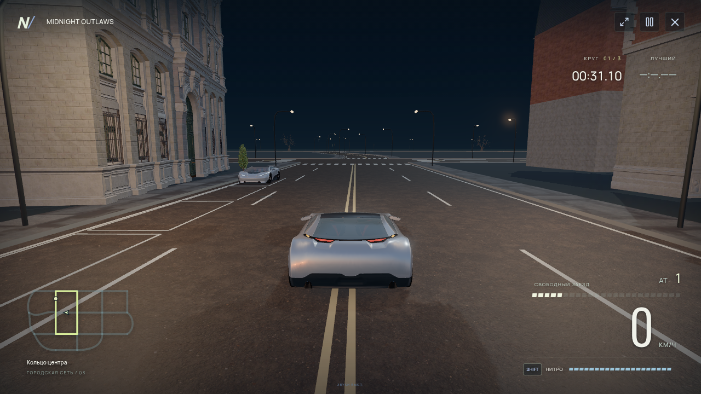
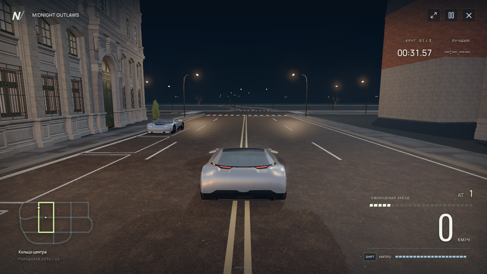
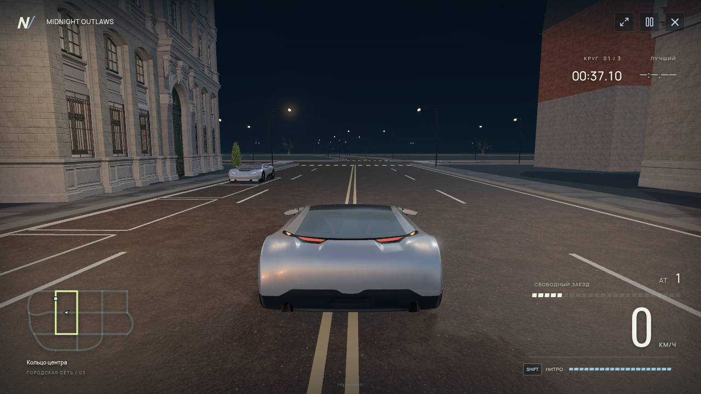
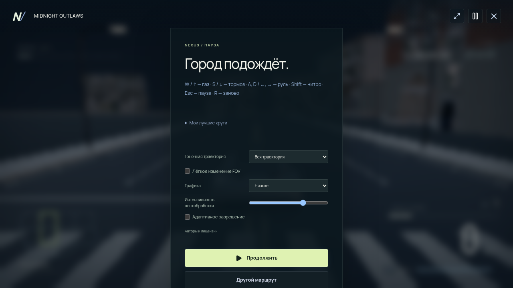
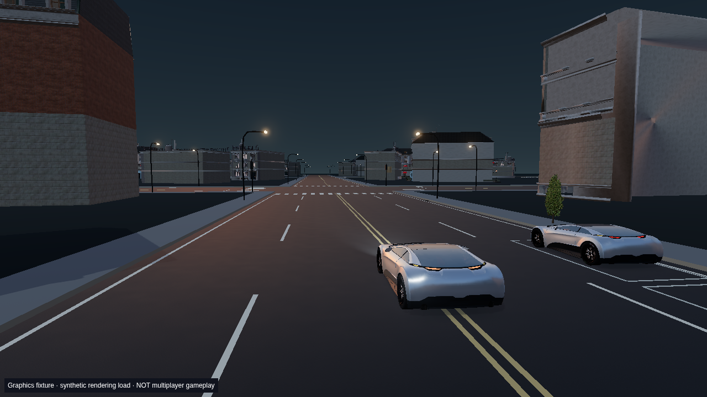
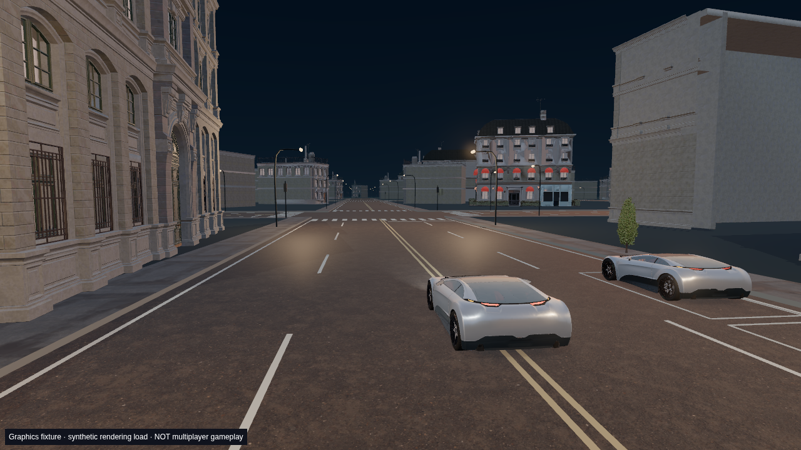

MIDNIGHT OUTLAWS
Графическое обновление
Настоящие кадры из работающего приложения: PBR-покрытие, полная модель автомобиля, локальные отражения, HDR и новые пресеты. Изображения не сгенерированы ИИ.
Реальный заезд
Виртуальный аналоговый геймпад, нитро, повороты и столкновение. Измеренный пик — 159.2 км/ч. Medium, DPR 0,5; запись на SwiftShader без физического GPU. Время воспроизведения не ускорено; частота кодирования видео не является FPS игры. Заезд на клавиатуре.
Игра на High и Ultra

High · настоящий игровой runtime, 1280 × 720, DPR 1. До места съёмки машина доехала на Low / DPR 0,15, затем качество изменено через настоящее меню паузы.
Ultra · полный исходный район и нативные normal maps, GTAO. Кадр после переключения настоящего меню графики; это не заявка на 60 FPS.
Рабочая Close Chase Camera.
Доступные настройки в настоящем меню паузы. Функциональный снимок на Low; кадры High и Ultra показаны выше.До / после: одинаковая проверочная камера
Эта пара — фиксированные позы настоящего 3D-рендера для сравнения материалов и композиции. Она не выдаётся за заезд или доказательство мультиплеера.

До.
После.Измерения этой среды
Программный Vulkan / SwiftShader, INTEL(R) XEON(R) PLATINUM 8573C, ограничение CPU 400000 100000. Это облачный runner без игровой видеокарты. Целевые High / 1080p / 60 FPS на игровом ПК требуют отдельной аппаратной проверки.
| Пресет | Фактический | Canvas | Кадры | FPS | Кадр, мс | P95, мс |
|---|
| low | low | 1632 × 918 | 72 | 0.77 | 1290.5 | 1720.8 |
| medium | medium | 1920 × 1080 | 16 | 0.16 | 6132.1 | 11987.9 |
| high | high | 1920 × 1080 | 8 | 0.07 | 14314.7 | 22931.0 |
| ultra | ultra | 1920 × 1080 | 8 | 0.05 | 20951.3 | 25934.8 |
| cinematic | cinematic | 1920 × 1080 | 6 | 0.05 | 20557.7 | 32163.6 |
| auto | low | 1060 × 596 | 87 | 0.97 | 1035.4 | 2013.8 |
Сводные измерения · сырые интервалы кадров и окружение. Для коротких выборок 1% low не объявляется достоверным. GPU timing / VRAM недоступны в этом окружении.
Границы этой версии
WebGL 2 сохранён после проверки несовместимости существующих GLSL-материалов с WebGPU. SSR, TAA, ray tracing, полноценный салон и baked GI не заявляются. В городе остаются упрощённые участки и глухие фасады. Публичные соревновательные контакты машин отключены; физические USB/Bluetooth-контроллеры в этой среде не проверялись.
Авторизация, библиотека, друзья, сохранения и серверные результаты сохранены. Сетевые тесты с четырьмя и шестью настоящими SDK-клиентами проверяют сеть и результаты, а не GPU-производительность.